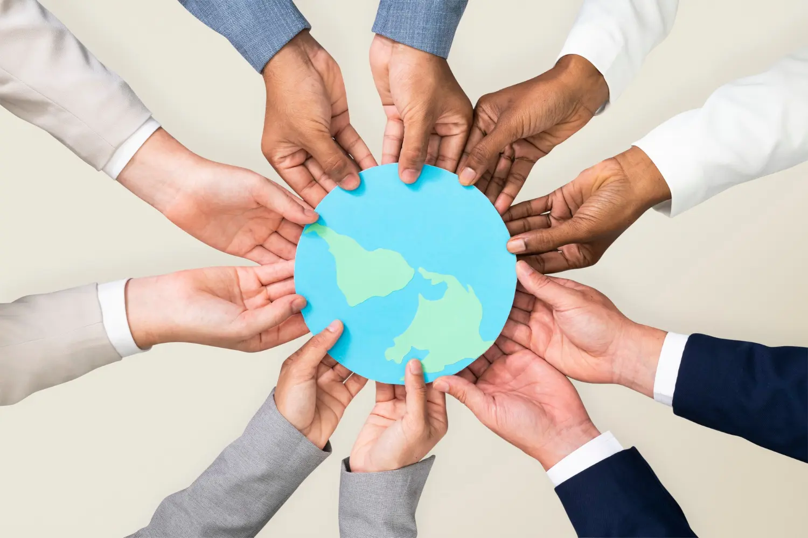
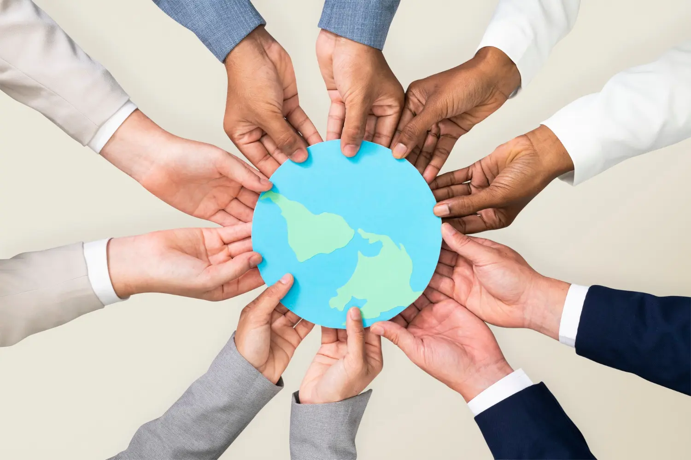

Apakah kamu tahu, apa itu SDGs (Sustainable Development Goals) dan arti kerja sama bilateral, regional, dan multilateral??
Dalam website ini, saya akan menjelaskan tentang pengertian kerja sama bilateral, regional, dan multilateral, apa itu SDGs, khususnya pendidikan berkualitas, peran Indonesia dalam kerja sama, dampak kerja sama bagi Indonesia, pemerintah, dan masyarakat,
SDGs (Sustainable Development Goals) adalah agenda global berisi 17 tujuan dan 169 target yang disusun oleh PBB pada tahun 2015. SDGs bertujuan menciptakan dunia yang inklusif, berkelanjutan, dan berkeadilan dengan fokus pada tiga aspek utama: ekonomi, sosial, dan lingkungan. Berlaku untuk semua negara, SDGs memastikan tidak ada yang tertinggal dengan mencakup isu seperti kemiskinan, ketimpangan, pelestarian lingkungan, dan kualitas hidup. Targetnya dicapai pada tahun 2030 melalui kerja sama global.

Kerja sama adalah upaya bersama yang dilakukan oleh dua pihak atau lebih untuk mencapai tujuan yang sama dengan saling membantu, berbagi sumber daya, dan mendukung satu sama lain. Kerja sama dapat berlangsung dalam berbagai bidang, seperti sosial, ekonomi, pendidikan, politik, hingga lingkungan, baik di tingkat individu, kelompok, organisasi, maupun antarnegara. Dalam kerja sama, penting adanya komunikasi yang baik, rasa saling menghormati, dan kepercayaan agar tujuan yang diharapkan dapat tercapai secara efektif. Dengan kerja sama, berbagai tantangan dapat diatasi bersama, serta hasil yang lebih optimal dapat diraih dibandingkan dengan bekerja secara individu.
 

Kerja sama adalah proses di mana dua pihak atau lebih bekerja bersama untuk mencapai tujuan bersama. Setiap pihak berkontribusi dengan keahlian, sumber daya, atau waktu untuk mendukung pencapaian tujuan tersebut. Dengan komunikasi yang baik, saling menghargai, dan pembagian tanggung jawab, kerja sama memungkinkan penyelesaian masalah dengan cara yang lebih efisien dan efektif. Selain itu, kerja sama juga memperkuat hubungan antar individu atau kelompok, membangun rasa saling percaya, dan menghasilkan hasil yang lebih optimal dibandingkan jika dilakukan secara terpisah.
Ciri-ciri kerja sama:
Manfaat kerja sama:
Kerja sama bilateral adalah hubungan yang dilakukan antara 2 negara untuk saling menguntungkan kedua belah pihak dan menjalin kerjasama dalam berbagai bidang. Biasanya dilaksanakan antar negara satu dengan negara lain yang memiliki hubungan diplomatik. Saat ini Indonesia telah menjalin kerja sama bilateral dengan 162 negara serta satu teritori khusus berupa non-self governing territory. Negara-negara mitra kerja sama Indonesia ini terbagi dalam 8 kawasan yaitu Afrika, Timur Tengah, Asia Timur dan Pasifik, Asia Selatan dan Tengah, dll. Hubungan luar negeri Indonesia dengan negara-negara lain telah dimulai sejak 17 Agustus 1945.
Contohnya yaitu kerja sama Indonesia dan Singapura. Kedua negara tersebut mengembangkan kerja sama promosi dan tujuan wisata, dilakukan untuk meningkatkan jumlah wisatawan yang datang ke Indonesia dan Singapura. Pemerintah Indonesia dan Singapura juga sepakat untuk memperluas kerja sama dalam bidang pendidikan, yaitu dengan menambah kapasitas pendidikan kejuruan. Selain itu juga mewujudkan perjanjian ekstradisi, yakni perjanjian untuk membebaskan seorang tersangka yang ditahan di suatu negara agar dikembalikan ke negara asalnya untuk diproses hukum di negara asalnya.
Kerja sama Multilateral adalah bentuk kerja sama yang diselenggarakan oleh bangsa-bangsa di dunia tanpa memandang wilayah untuk kepentingan tertentu dalam berbagai bidang seperti perdagangan, keamanan, kesehatan, dan lingkungan. Melalui organisasi internasional seperti PBB, WTO, negara-negara bekerja sama untuk mencapai tujuan bersama, berbagi sumber daya, dan menciptakan solusi yang efektif. Kerja sama ini memperkuat stabilitas global, meskipun sering menghadapi tantangan seperti perbedaan kepentingan dan kesenjangan kekuasaan di antara negara-negara peserta.
Contoh kerja sama multilateral adalah World Trade Organization (WTO) dalam bidang ekonomi yang bertugas untuk menata dan memfasilitasi lalu lintas perdagangan antar negara serta mengatasi perselisihan perdagangan antara negara. WTO menyediakan aturan dan pedoman yang mengatur bagaimana perdagangan internasional dilakukan. Hal ini termasuk perjanjian dagang yang mengatur tarif, kuota, subsidi, dan hambatan non-tarif untuk memastikan perdagangan lebih lancar dan adil.

Kerja sama Regional adalah bentuk kerja sama yang melibatkan sekelompok negara dalam satu wilayah geografis yang sama atau memiliki kepentingan bersama dalam isu tertentu. Tujuan kerja sama regional adalah untuk mengatasi masalah yang spesifik bagi wilayah tersebut, memperkuat integrasi ekonomi, politik, atau keamanan, serta mempromosikan pertumbuhan ekonomi yang berkelanjutan. Kerja sama regional sering kali diwujudkan melalui organisasi atau perjanjian yang mengatur hubungan antar negara untuk mendukung pertumbuhan ekonomi yang berkelanjutan, mempererat hubungan diplomatik, dan menciptakan stabilitas politik. Selain itu, kerja sama regional berperan penting dalam menangani isu-isu lingkungan, pengelolaan sumber daya bersama, hingga mitigasi bencana yang sering kali melibatkan lebih dari satu negara dalam satu kawasan.
Contoh kerja sama regional adalah ASEAN (Association of Southeast Asian Nations) yang melibatkan negara-negara di kawasan Asia Tenggara yang didirikan pada 8 Agustus 1967. Tujuan utamanya untuk mendorong kerja sama dan integrasi di kawasan Asia Tenggara dalam berbagai bidang, seperti politik, meningkatkan kerja sama ekonomi, sosial, budaya, dan mempererat hubungan sosial-budaya di antara negara anggotanya. Saat ini, ASEAN beranggotakan 10 negara yaitu Indonesia, Singapura, Thailand, Malaysia, Filipina, Brunei Darussalam, Vietnam, Laos, Myanmar, dan Kamboja.
Sustainable Development Goals (SDGs) atau Tujuan Pembangunan Berkelanjutan adalah serangkaian 17 tujuan yang direncanakan oleh Perserikatan Bangsa-Bangsa (PBB) sebagai cetak biru untuk mencapai kehidupan yang lebih baik di masa depan dan lebih berkelanjutan bagi semua orang. SDGs dirancang pada tahun 2015 untuk mengatasi berbagai tantangan global, termasuk kemiskinan, ketidaksetaraan, perubahan iklim, degradasi lingkungan, perdamaian, dan keadilan. Dengan kata lain, SDGs merupakan komitmen global untuk menciptakan dunia yang lebih baik dan berkelanjutan. Melalui kerja sama internasional dan upaya kolektif, tujuan-tujuan ini diharapkan dapat tercapai demi kesejahteraan generasi sekarang dan masa depan.
Pendidikan adalah hak mendasar dalam kehidupan manusia dan memiliki peran penting untuk menunjang kehidupan sehari-hari. Penerapan dan pengembangan kajian pendidikan harus sesuai dengan kondisi dan situasi sosial masyarakat. Pendidikan tidak hanya berfungsi untuk menciptakan generasi muda sebagai agen perubahan, tetapi juga sebagai produsen yang mampu menciptakan perubahan nyata. Pendidikan harus dapat mengubah pola pikir dan mendorong kreativitas serta inovasi anak bangsa.
Kualitas pendidikan di Indonesia masih perlu ditingkatkan agar dapat bersaing secara global. Berdasarkan laporan UNESCO dan program pembangunan PBB, posisi Indonesia dalam indeks pendidikan dan pembangunan manusia masih tertinggal dibandingkan negara-negara tetangga. Oleh karena itu, tujuan pendidikan menjadi fokus utama dalam mendorong pencapaian pembangunan berkelanjutan hingga 2030. Peningkatan pendidikan diharapkan mampu meningkatkan daya saing Indonesia dalam mendukung tujuan SDGs 2030.
Contoh nyata: Di Indonesia, beberapa sekolah telah menerapkan program ini dengan mendirikan kebun sekolah di mana siswa menanam sayuran organik yang kemudian digunakan dalam kantin sekolah. Selain itu, ada program daur ulang di mana siswa diajarkan cara mendaur ulang kertas dan plastik.
Indonesia berperan dalam menjaga perdamaian dunia, memberikan bantuan kemanusiaan di berbagai negara, dan membantu menyelesaikan konflik di berbagai negara. Indonesia juga memiliki prestasi dan kontribusi yang signifikan dalam PBB, baik dalam bidang politik maupun hukum internasional. Contoh kontribusi Indonesia di PBB termasuk pengiriman Pasukan Garuda untuk misi perdamaian di berbagai negara yang mengalami konflik dan terpilihnya Indonesia sebagai anggota tidak tetap Dewan Keamanan PBB pada beberapa periode, pertama kali pada 1974-1975.
Selain itu, Indonesia juga aktif dalam pengembangan hukum internasional dan mendukung inisiatif global seperti SDGs dan Paris Agreement. Indonesia juga berpartisipasi dalam inisiatif kesehatan dan pendidikan global yang diinisiasi oleh PBB, seperti kampanye imunisasi dan program Pendidikan untuk Semua. Indonesia berperan dalam mediasi perdamaian di beberapa negara, seperti Filipina Selatan dan berbagai negara Afrika.
Indonesia memberikan bantuan kemanusiaan kepada negara-negara yang terkena bencana alam dan konflik, serta mendukung program-program pembangunan berkelanjutan untuk meningkatkan kesejahteraan global. Semua kontribusi ini menunjukkan komitmen Indonesia dalam kerjasama internasional dan perannya dalam menciptakan dunia yang lebih damai dan sejahtera.
Persatuan Indonesia: Dalam kontribusi di PBB dan organisasi internasional lainnya, Indonesia selalu mengutamakan pentingnya persatuan dan kerjasama antar bangsa untuk mencapai perdamaian dan kesejahteraan. Indonesia sering kali berperan sebagai penengah dalam konflik internasional, berusaha mencari solusi yang dapat diterima oleh semua pihak. Contoh nyata dari semangat persatuan ini adalah partisipasi Indonesia dalam misi perdamaian PBB, seperti pengiriman Pasukan Garuda ke berbagai negara yang mengalami konflik. Melalui partisipasi ini, Indonesia tidak hanya membantu menjaga stabilitas dan perdamaian dunia, tetapi juga memperkuat hubungan baik dengan negara-negara lain.
Keadilan Sosial bagi Seluruh Rakyat Indonesia: Melalui dukungan pada program global seperti Sustainable Development Goals (SDGs), Indonesia berupaya untuk menciptakan keadilan sosial, tidak hanya di dalam negeri tetapi juga dalam internasional. Upaya ini termasuk memperjuangkan hak asasi manusia, kesetaraan gender, dan pembangunan berkelanjutan. Indonesia mendukung program-program PBB yang bertujuan untuk mengurangi kesenjangan sosial dan ekonomi, meningkatkan akses terhadap pendidikan dan kesehatan, serta memperbaiki kualitas hidup masyarakat di seluruh dunia. Dengan berpartisipasi dalam usaha ini, Indonesia menunjukkan komitmennya untuk menciptakan dunia yang lebih adil dan sejahtera bagi semua.
Kerja sama bilateral antara Indonesia dan Singapura mencerminkan semangat persatuan dan kerjasama yang kuat. Kedua negara bekerja sama dalam berbagai wadah internasional untuk mencapai tujuan bersama, seperti dalam ASEAN dan kerja sama ekonomi. Dengan menjalin hubungan yang harmonis dan saling menguntungkan, kedua negara memperkuat persatuan dan stabilitas di kawasan Asia Tenggara. Persatuan ini menjadi tumpuan penting untuk membangun kerjasama yang solid dan berkelanjutan, yang bermanfaat bagi masyarakat kedua negara.
Dalam penjelasan diatas, dapat disimpulkan bahwa kerja sama adalah kegiatan di mana dua pihak atau lebih bekerja bersama untuk mencapai tujuan bersama. Kerja sama ini dapat dilakukan di berbagai bidang seperti bidang ekonomi, politik, sosial, dan budaya. Kerja sama internasional dibagi tiga macam yaitu kerja sama bilateral, regional, dan multilateral. Kerja sama bilateral adalah hubungan antara 2 negara untuk saling menguntungkan di berbagai bidang. Indonesia telah menjalin kerja sama dengan 162 negara sejak kemerdekaannya. Kerja sama regional adalah hubungan antarnegara di wilayah yang sama untuk mengatasi isu bersama, memperkuat integrasi, dan mendukung pertumbuhan berkelanjutan. Sedangkan, kerja sama multilateral adalah hubungan antarnegara di seluruh dunia melalui organisasi internasional untuk mencapai tujuan bersama dalam berbagai bidang.
SDGs nomor 4, yaitu pendidikan berkualitas, menekankan betapa pentingnya memberikan akses pendidikan yang merata untuk semua anak, tanpa memandang latar belakang atau kondisinya. Pendidikan yang berkualitas menjadi hal dasar dalam mencapai masa depan yang cerah, karena dengan pendidikan yang baik, generasi muda dapat lebih siap dalam menghadapi tantangan global dan memberikan dampak positif bagi masyarakat sekitar. Dalam Indonesia, pendidikan berkualitas sangat penting untuk meningkatkan daya saing nasional dan mendukung pembangunan yang akan datang. Upaya ini terlihat dari berbagai usaha dan program yang direncanakan oleh pemerintah dan berbagai lembaga pendidikan. Dengan pendidikan yang berkualitas, kita bisa menjadi generasi penerus bangsa yang berwibawa, kreatif, dan memiliki jiwa kepemimpinan yang tinggi.
Pendidikan yang berkualitas juga mencerminkan nilai-nilai luhur Pancasila seperti kemanusiaan, persatuan, dan keadilan sosial. Melalui pendidikan, kita bisa menanamkan nilai-nilai tersebut kepada generasi muda, sehingga mereka tidak hanya berilmu, tetapi juga berakhlak mulia dan peduli terhadap sesama.
Bagi Pemerintah dan Lembaga Pendidikan untuk tingkatkan investasi dalam infrastruktur dan teknologi pendidikan untuk menciptakan lingkungan belajar yang modern dan nyaman. Selain itu, kembangkan juga kebijakan yang mendorong inovasi dalam metode pengajaran dan pembelajaran agar lebih efektif dan menyenangkan bagi siswa.
Bagi Guru dan Tenaga Pendidikan untuk tingkatkan kompetensi dan keterampilan melalui pelatihan berkelanjutan dan pengembangan profesional. Guru harus selalu update dengan perkembangan terbaru dalam bidang pendidikan dan teknologi agar dapat mengajar dengan cara yang paling efektif.
Bagi Orang Tua dan Masyarakat untuk selalu mendukung pendidikan anak-anak dengan menciptakan lingkungan yang nyaman untuk belajar di rumah. Orang tua harus terlibat aktif dalam proses pendidikan anak-anak mereka dan berkomunikasi dengan sekolah untuk memastikan kebutuhan pendidikan anak terpenuhi.
Bagi siswa untuk memanfaatkan kesempatan yang ada untuk terus belajar dan berkembang, serta berpartisipasi aktif dalam kegiatan pendidikan dan pengembangan diri. Siswa harus memiliki semangat dan motivasi yang tinggi untuk belajar dan mengejar ilmu pengetahuan, serta memanfaatkan teknologi sebagai alat pembelajaran.
Dengan adanya tugas ini, saya sebagai generasi muda dan seorang siswi makin menyadari bahwa kerja sama internasional atau kerja sama antar negara sangat penting dilakukan untuk memajukan dan meningkatkan bangsa. Manusia pada dasarnya adalah makhluk sosial yang membutuhkan bantuan orang lain untuk bertahan hidup. Demikian juga dengan kerja sama internasional yang dilakukan negara-negara, juga berguna untuk mencapai tujuan bagi kehidupan manusia dan makhluk hidup lainnya menjadi lebih baik. Selain itu dengan kerja sama, kita dapat saling melengkapi karena tidak ada 1 negara pun yang memiliki semua kebutuhannya sendiri, oleh karena itu kerja sama internasional ini sangat penting. Dengan menjalin kerja sama, kita juga diharapkan dapat menjaga integritas dan kesepakatan yang telah disepakati bersama.
Untuk menyelesaikan SDGs tidak hanya membutuhkan bantuan dari pemerintah atau kementrian, tetapi juga butuh bantuan dari semua orang termasuk kita agar dapat berkontribusi aktif dalam menyelesaikan tujuan SDGs ini. Semua orang berhak mendapatkan pendidikan yang berkualitas, baik yang berasal dari keluarga yang kurang atau berbeda ras. Pendidikan membantu ilmu kita agar terus berkembang dan bermanfaat serta berguna bagi masa depan bangsa. Saya sebagai generasi muda yang akan menjadi generasi penerus bangsa harus membantu sesama dan menciptakan kehidupan yang adil dan sejahtera bagi semua orang.